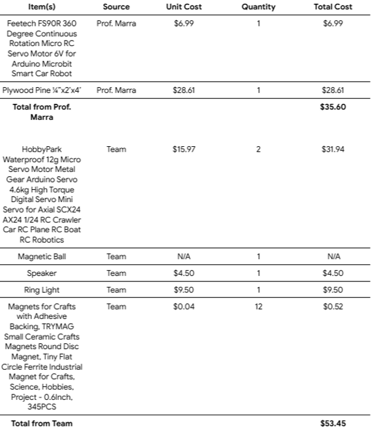
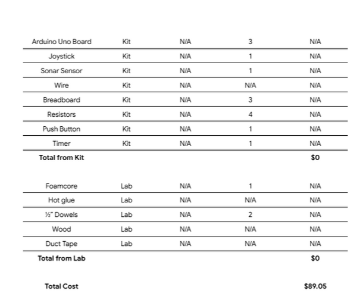
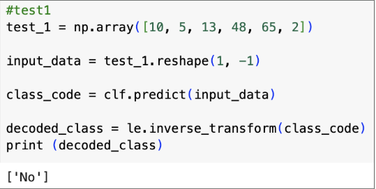
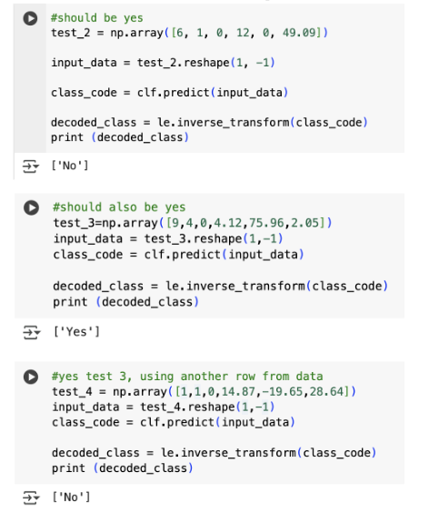

A Hansel and Gretel themed tilt-table arcade game.
My project group's game was an escape-themed tilt-table maze game, decorated to correspond to the Hansel and Gretel fairytale. We had four main sub-assemblies in our game: the tilt-table maze, a magnetic-wheel ball return, a catch-basin for balls falling out of the maze, and our electronics systems. My work on the project involved designing and constructing the magentic-wheel ball return and implementing its corresponding electronic systems.
To begin the game, a player pushes a button that activates the servos connected to the tilt-table. The player then uses a joystick to control the maze and attempts to move a small magnetic ball past obstacles and to the maze end. If the ball falls through a hole in the maze board or makes it to the end of the maze while the player moves the board, the ball lands on our catch-basin, which is inclined to bring the ball towards the ball return ramp. The ball return ramp then brings the ball past a sonar sensor and to a magnetic wheel which the ball attaches to. After a slight delay, the wheel would start spinning, bringing the ball to the top of another return ramp to be wedged off. The return ramp then brings the ball back to the beginning of the maze and allows the player to start the game again.
I designed, prototyped, and CADed the ball return sub-assembly and all of the necessary components in SolidWorks. The drawings were then used to laser cut the pieces out of wood or acrylic.
View SolidWorks Drawings SetThe following corresponds to the entire project, not just my subsystem.


I tested the model by feeding it inputs that should have yielded "Yes" (the shot was successful) or "No" (the shot was unsuccesful). I fed it four test cases, and it only predicted two correctly (50% accuracy), indicating that there are likely flaws within the model. However, four test cases is a very small number, and with more test cases, the model's accuracy could increase.

